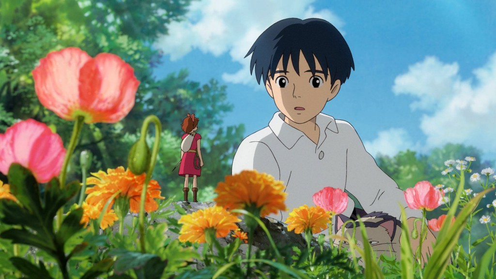

Studio Ghibli movies and the adorable characters have captured people's hearts from all over the world. There are few people who haven't seen or at least heard of classics like Spirited Away or My Neighbor Totoro. But did you know that it was a long, hard road to fame until Studio Ghibli was eventually recognized?

Studio Ghibli was founded in 1985 in Tokyo by the three men, Isao Takahata, Toshio Suzuki and the well-known film producer Hayao Miyazaki. The name Studio Ghibli was based on the Arabic name for "hot sahara wind" because the founders wanted Studio Ghibli to blow new wind through the anime industry. At the same time Ghibli was also the name of an Italian war plane and therefore it also represented Hayao Miyazaki's love for planes and for Italy.